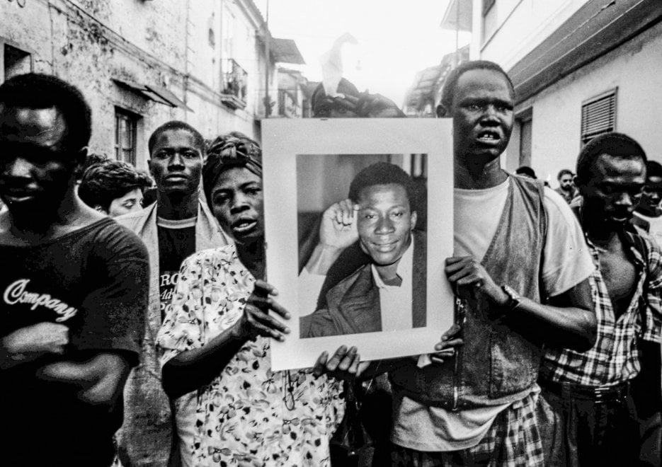

Chi era Jerry Essan Masslo
Rifugiato sudafricano, attivista e simbolo universale della lotta al caporalato, al razzismo e alla difesa dei diritti dei lavoratori.
La Fuga dall'Apartheid in Sudafrica
Jerry Essan Masslo nasce a Umtata, in Sudafrica, nel 1959. Cresce sotto il brutale regime di segregazione razziale dell'Apartheid, partecipando attivamente alle proteste per la libertà e l'uguaglianza dei diritti per la popolazione nera.
La sua vita viene segnata da gravi lutti familiari: il padre e il fratello vengono uccisi durante i disordini politici, e nel 1987 la sua figlioletta di appena sette anni perde la vita colpita da un proiettile vagante durante una manifestazione a Soweto. A causa delle continue persecuzioni e del pericolo di vita, Masslo è costretto a fuggire dal Paese imbarcandosi come clandestino su una nave cargo diretta in Europa.
L'Arrivo in Italia e la Denuncia dello Sfruttamento
Nel marzo del 1988 Jerry Masslo giunge a Roma ed esprime subito la volontà di richiedere asilo politico. Tuttavia, la legislazione italiana dell'epoca conteneva la cosiddetta "riserva geografica" prevista dalla Convenzione di Ginevra, che riconosceva lo status di rifugiato unicamente a chi proveniva dai Paesi del blocco orientale europeo. La sua domanda viene respinta, lasciandolo in una condizione di precarietà giuridica ed economica.
Per sopravvivere, Masslo si trasferisce nel casertano, a Villa Literno, per lavorare come bracciante stagionale alla raccolta dei pomodori. Qui si scontra con una realtà disumana: turni estenuanti di oltre 12 ore al giorno, paghe irrisorie controllate dai caporali e alloggi di fortuna in casolari diroccati e sovraffollati, privi di acqua e luce.
Nonostante le sofferenze, Jerry Masslo non rinuncia alla dignità e alla voce. Durante uno dei servizi del TG2 sulla condizione dei lavoratori africani nel casertano, rilasciò una testimonianza rimasta storica:
«Pensavo di trovare in Italia un rifugio, un posto in pace, e invece ho trovato violenza e discriminazione... Non siamo animali, siamo esseri umani che cercano solo di lavorare con dignità.»
Il Tragico Omicidio e l'Impatto Sociale
Nella notte tra il 24 e il 25 agosto 1989, un commando di criminali locali armati fa irruzione nel casolare di Villa Literno dove Jerry Masslo dormiva insieme ad altri connazionali, con l'intenzione di rapinare i braccianti dei loro pochi guadagni stagionali.
Jerry Masslo si rifiuta di cedere alla violenza ed erge una forte opposizione verbale e fisica per proteggere i compagni: uno dei rapinatori spara a bruciapelo colpendolo a morte. La sua uccisione scuote profondamente la coscienza pubblica dell'intero Paese.

La Nascita del Movimento e la Legge Martelli
I funerali di Stato di Jerry Masslo, celebrati a Villa Literno alla presenza delle massime autorità istituzionali e trasmessi in diretta televisiva sulla RAI, segnano uno spartiacque fondamentale nella storia sociale dell'Italia contemporanea:
- Sciopero dei Braccianti: Per la prima volta in Italia, i braccianti agricoli stranieri incrociano le braccia per chiedere diritti, contratti regolari e la fine del caporalato.
- La Grande Manifestazione di Roma: Il 7 ottobre 1989 sfilano a Roma oltre 200.000 persone nella prima grande manifestazione nazionale anti-razzista d'Italia.
- La Legge Martelli (L. 39/1990): Sotto la spinta della protesta civile, nel febbraio 1990 il Parlamento approva la prima normativa organica sull'immigrazione, abolendo la riserva geografica e permettendo la regolarizzazione di centinaia di migliaia di lavoratori.
Il sacrificio di Jerry Essan Masslo rappresenta ancora oggi la matrice etica dell'Associazione a lui intitolata a Castel Volturno, impegnata quotidianamente per la tutela della salute, dei diritti e della dignità di ogni persona.